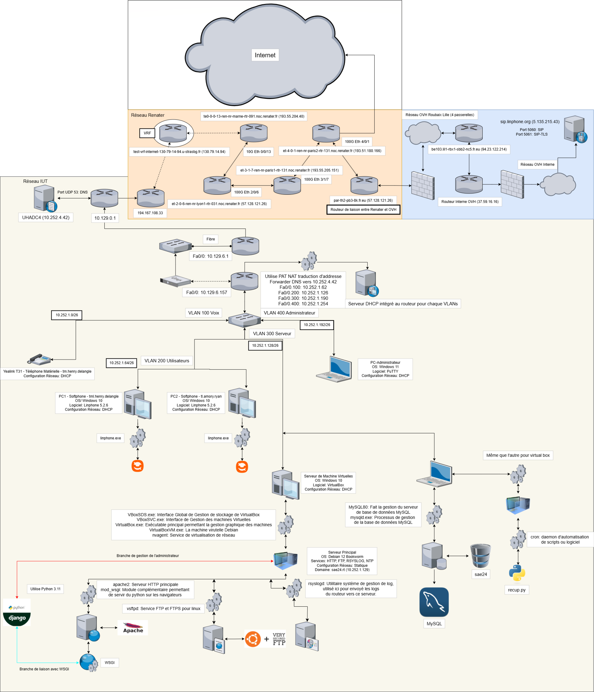
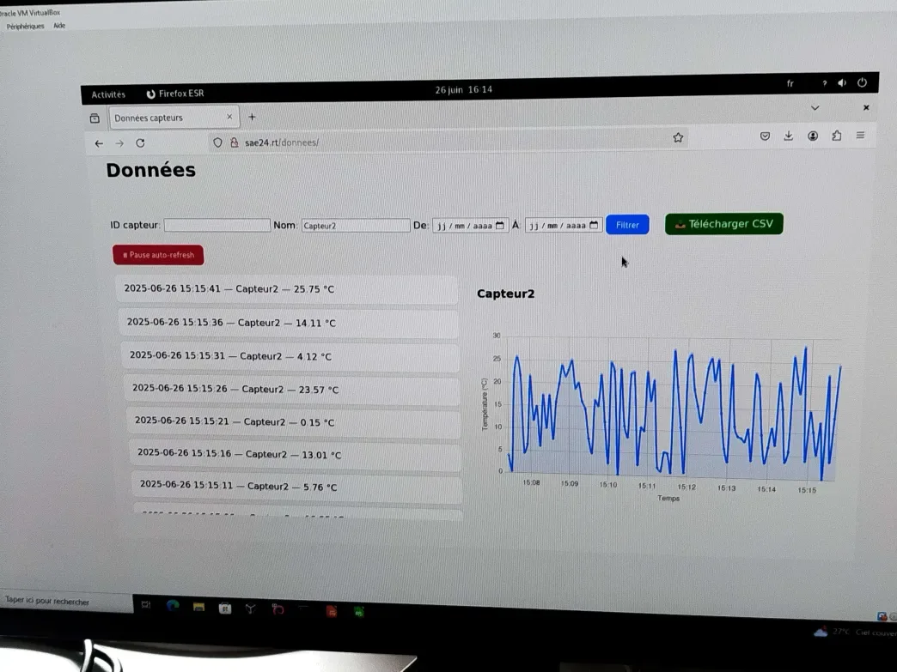
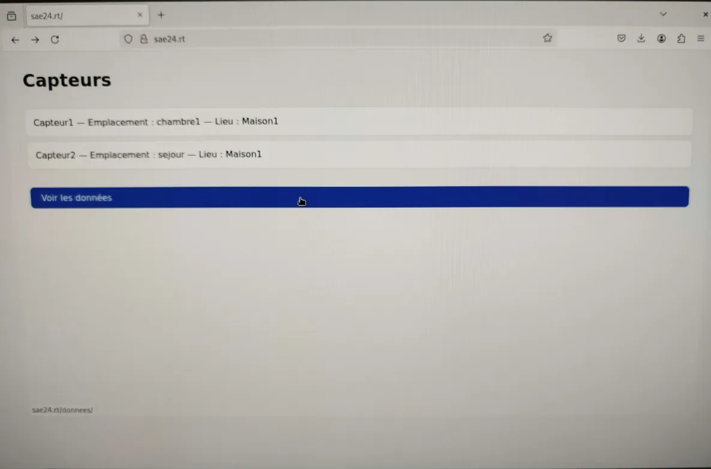
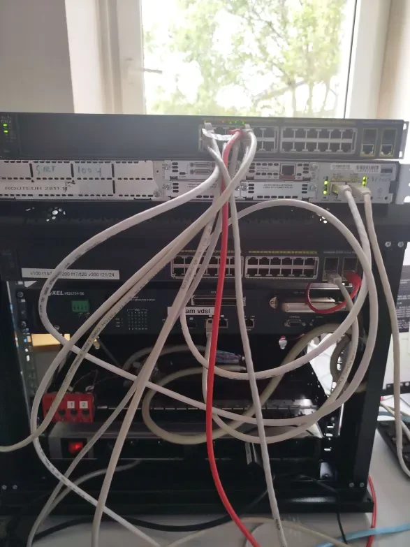

Projet intégratif : réseau, VoIP et collecte de données
Projet pluridisciplinaire combinant réseau, téléphonie IP, collecte de données de capteurs et application web.
- Cadre
- BUT R&T
- Équipe
- 3 étudiants
- Mon rôle
- Réseau, admin. système, gestion de projet
- Statut
- Terminé
01En résumé
Objectif
Valider les compétences fondamentales en réseau, téléphonie, collecte de données et développement web dans un seul projet.
Ma contribution
Responsable de l'administration réseau et système (routeur, switch, serveurs) et de la gestion de projet.
Résultat
Toutes les fonctionnalités livrées largement avant l'échéance, grâce à une bonne cohésion d'équipe.
02Le projet
- Réseau : VLAN (voix, utilisateurs, serveurs, admin), routage inter-VLAN, DHCP, DNS, FTP, NTP, ACL et iptables en politique DROP par défaut.
- Téléphonie : softphones Linphone et téléphone IP matériel sur le protocole SIP.
- Collecte de données : scripts Python récupérant les mesures de capteurs via MQTT.
- Web et base de données : interface Django pour visualiser et gérer les données stockées dans MySQL.
03Démarche
- Planification réseau : VLAN, plages IP et rôles des équipements.
- Configuration matérielle : routeur en router-on-a-stick (DHCP, NAT) et commutateur (VLAN, port mirroring).
- Services : FTP, NTP et Rsyslog sur le serveur Debian.
- Téléphonie : softphones Linphone et téléphone matériel, inscription au service SIP cloud.
- Données et web : modèle de base de données, scripts de collecte MQTT et tableau de bord Django.
- Tests : validation de toutes les fonctionnalités et de l'interconnexion des systèmes.
04Technologies
- VLAN & routage
- Voix, utilisateurs, serveurs, admin ; inter-VLAN
- Sécurité réseau
- ACL, iptables DROP par défaut, séparation des VLAN
- VoIP / SIP
- Linphone, téléphone IP matériel
- Services
- DHCP, DNS, NTP, FTP, Rsyslog, NAT
- MQTT
- Collecte des données de capteurs
- Django + MySQL
- Visualisation et stockage des mesures
05Galerie




06Compétences BUT mobilisées (Apprentissage Critique)
AC11.02Comprendre l'architecture et les fondements des systèmes numériques, des
communications et de l'Internet
Lecture de l'architecture complète du projet : découpage en VLAN (voix, utilisateurs, serveurs, admin), rôles des équipements et flux entre les briques réseau, télécom et services.
AC11.03Configurer les fonctions de base du réseau local
Configuration du routage inter-VLAN (router-on-a-stick), du DHCP, du DNS et du NAT sur le routeur et le commutateur.
AC11.04Maîtriser les rôles et principes fondamentaux des systèmes d'exploitation
Administration d'un serveur Debian : mise en place des services FTP, NTP et Rsyslog, gestion des utilisateurs et des droits.
AC11.05Identifier les dysfonctionnements du réseau local et savoir les signaler
Phase de tests de bout en bout : validation de l'interconnexion des VLAN, des services et de la téléphonie, et remontée des anomalies à l'équipe.
AC11.06Installer un poste client, expliquer la procédure
Installation et configuration des softphones Linphone et d'un téléphone IP matériel, avec documentation de la procédure d'inscription au service SIP.
AC12.04Connecter les systèmes de ToIP
Intégration de la téléphonie IP sur le réseau : softphones et téléphone matériel enregistrés sur un service SIP cloud, sur un VLAN voix dédié.
AC13.02Lire, exécuter, corriger et modifier un programme
Écriture et débogage des scripts Python de collecte des mesures de capteurs via MQTT.
AC13.05Choisir les mécanismes de gestion de données adaptés au développement de
l'outil et argumenter ses choix
Choix de MySQL et conception du modèle de données pour stocker les mesures, en lien avec l'application Django de visualisation.
AC13.06S'intégrer dans un environnement propice au développement et au travail
collaboratif
Rôle de chef de projet : coordination d'une équipe de 3 sur les volets réseau, téléphonie, données et web, avec suivi des livrables en avance sur l'échéance.
07Bilan
Ce que j'en retiens
La mise en oeuvre entre le serveur web, WSGI et Django, l'installation d'un serveur NTP et la centralisation des journaux d'un routeur Cisco. Le rôle de chef de projet m'a aussi appris à coordonner une équipe sur plusieurs domaines techniques.
Avec du recul
Lors de la soutenance, un coéquipier n'a pas su répondre à des questions sur la partie réseau dont je m'étais chargé. Je prendrais le temps que chacun comprenne l'ensemble du projet, comme nous l'avions fait pour la partie web.